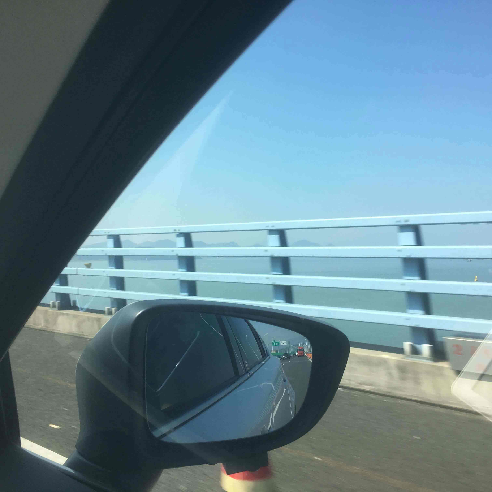
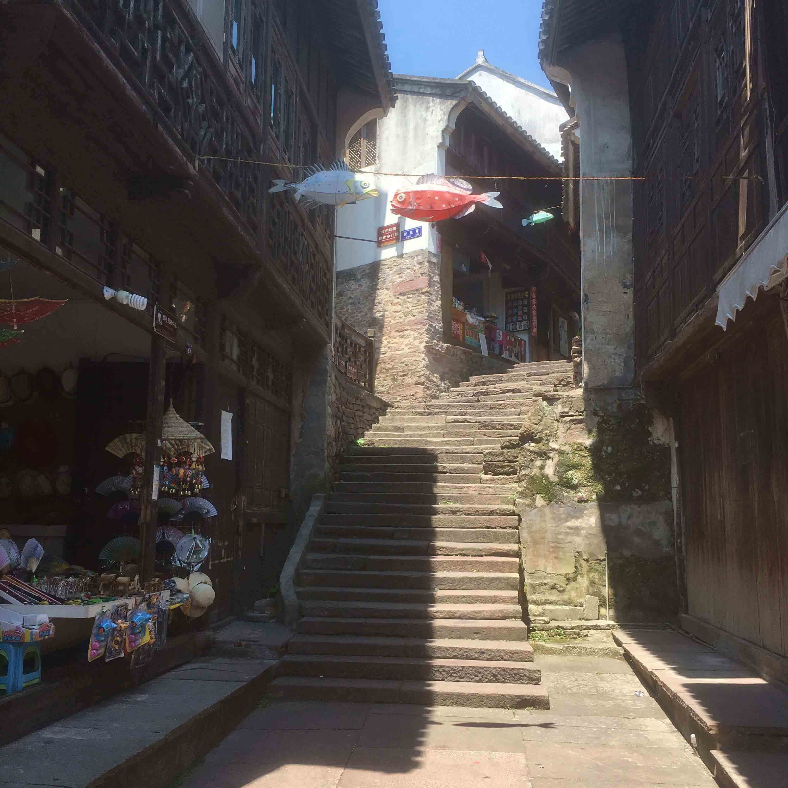
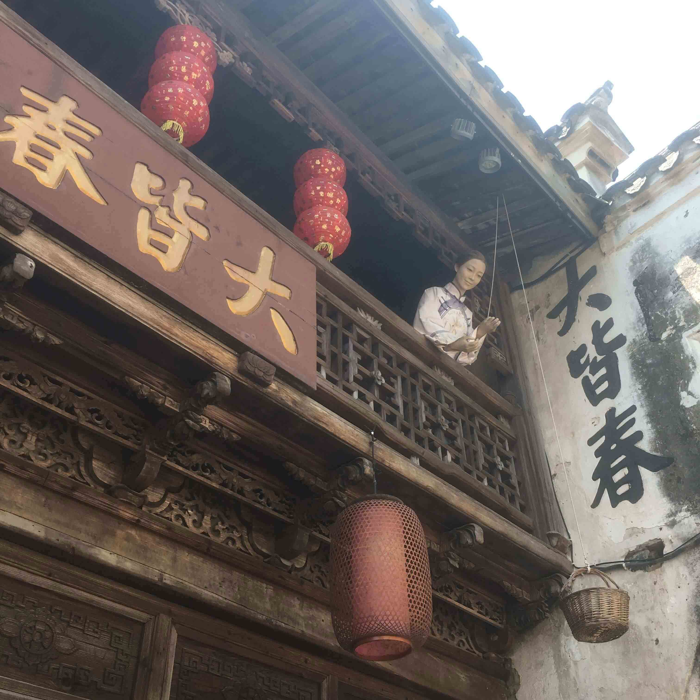
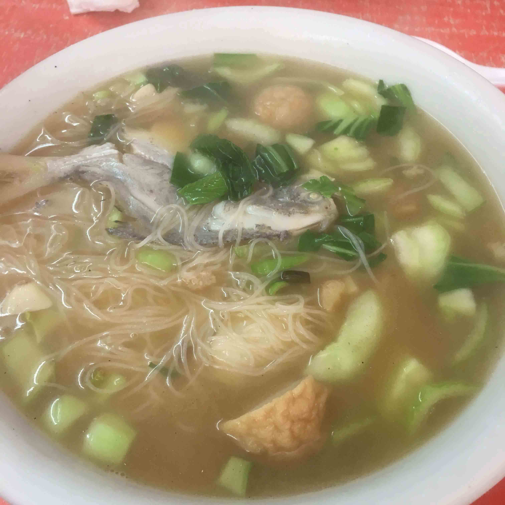
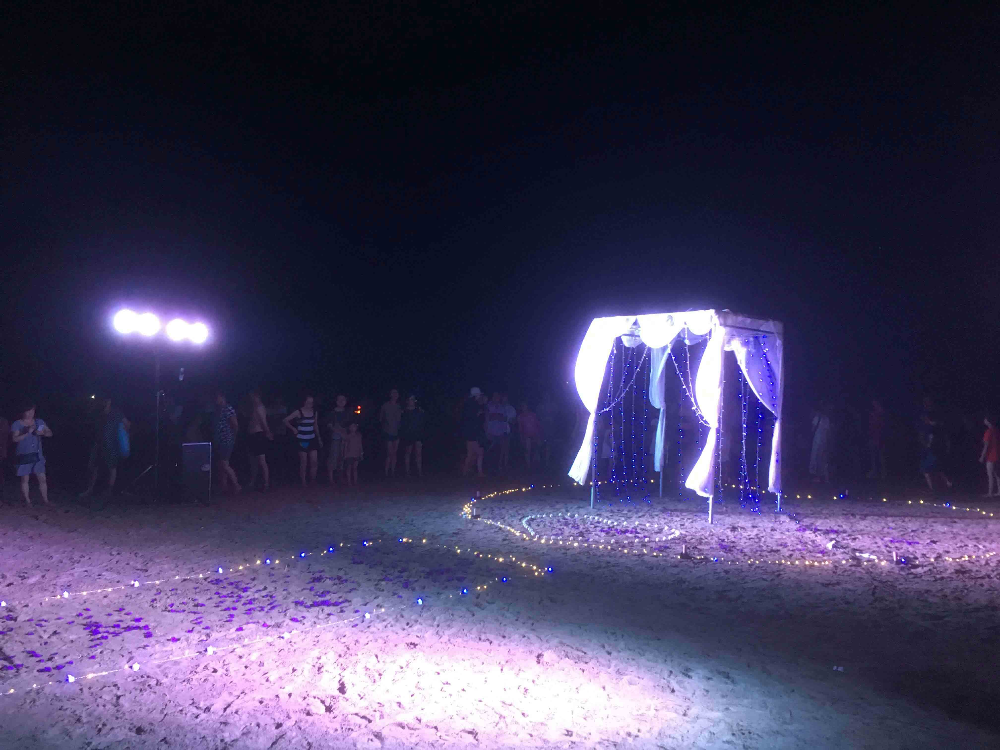
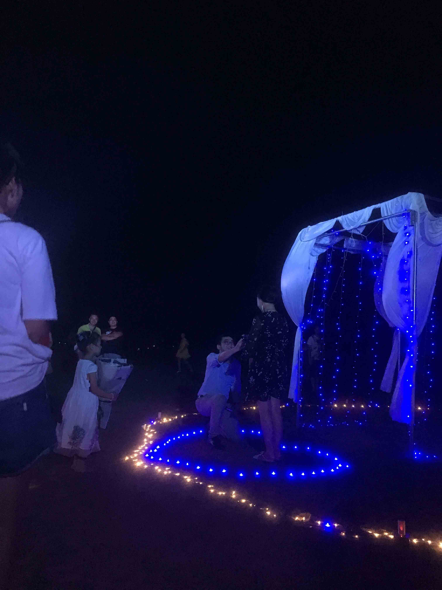

周五小伙伴们就突发奇想的想来场说走就走的旅行，考虑了一下，决定去象山玩两天。周五晚上开始做攻略，查路线，这样的旅行还是太着急，到晚上12点多才订到酒店。下次还是应该早做准备，尽早安排。
因为预约到了滴滴的顺风车，所以周六的早上也不用很早起床，按照平时上班的时间，起床，赶到世纪东方广场。吃完了负一楼的早饭，差不多刚好8点半，和小伙伴一起上了车前往象山第一天的目的地--石浦。
宁波到石浦车程大概1个半小时，感觉象山交通不是很方便，从象山下高速，然后到石浦的一路上，似乎就一条不大不小的路，十字路口都很少。适逢周末，路上车很多，原来1个半小时的路程花了2个小时。
因为我们的第一站是石浦古镇，所以我们订的客栈就选在了古镇旁边。这家客栈的条件不怎么样，但是就在古镇入口旁边，价格225，算是很便宜了。
把行李物品都放好，因为还不是很饿，我们就没有吃饭，先去石浦古镇游玩。门票60元一张，其实我感觉不是很值，说是古镇，其实就是一条街，街边还有很多老房子住着居民，除去那些有票才能进得像是记录馆一样的地方， 其实就没什么东西可看。
 差不多一个小时都不到的时间，我们就走完了古镇的那条街，比想象中小的太多了。古镇那条街走出去，就是一条日常的居民的小街了，有杂货店，水果店，小排档等。我们选了一家小的排挡，点了海鲜面。25块钱，加了4份海鲜。
说实话，味道就一般般，不是很鲜，甚至有点不如我在宁波吃过的一些海鲜面，而且价格有点小贵。
夏天的太阳真的太毒辣，吃完饭我们买了些西瓜就回客栈了，一边看看电视，一边吃着西瓜，美滋滋。
晚上去了滴滴司机推荐的南屏路去吃海鲜，据说是面向本地人的，又便宜又好吃。我们找了一家，最火爆的，叫开心小炒的海鲜排挡。真的，我没见过上菜这么慢，服务态度还这么拽的店家。而且价格也不算便宜，感觉就算在石浦古镇 旁边的海边吃价格也差不多。
吃完饭，我们赶去了中国渔村，因为6点之后，不就收门票了，所以很多人就在这个时间点之后去那边，所以我们过去的时候，人特别多，好在沙滩挺大，也不会显得特别的拥挤。只是天已经暗了，只能玩玩水，并 看不到大海和沙滩的真实面貌。这里的沙子真的挺细挺软，脚上的沙子在干了以后也不会感觉很不舒服。
这是有人想在沙滩上求婚，婚庆公司搭的一个浪漫求婚场景，一切已经准备就绪，就等着男女主人公的到来了。
等到差不多9点，男女主人公才到场。求婚很顺利，女主很懵逼。听男的说，他们高中开始认识了12年，交往了一年，现在修成正果了。祝福他们两个吧。
晚上回到客栈，已经挺累了，洗完澡，稍微玩会儿手机就睡了。我不认床，睡的还行。
DAY1--------------END